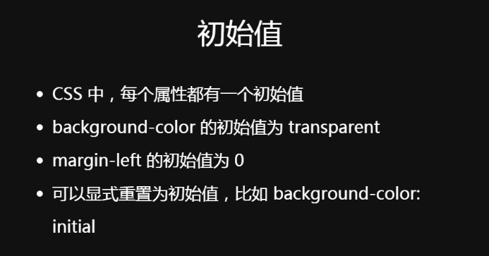

CSS的值和单位
任务目标：学习最常用的CSS属性值以及相关的单位。
有很多类型的CSS属性值需要考虑，从数值到颜色，再到执行特定操作的函数（如嵌入背景图像或旋转元素）。其中一些依赖于特定单位来指定它们的确切值：代表 - 你想要你的盒子宽30像素，或30厘米，或30毫米？
在这个指南中，我们将介绍更常见的值，如长度，颜色和简单函数，以及探索不太常见的单位，如度数，甚至无单位数值。


我们只介绍对于你继续掌握CSS可能最有用的。本文将会涉及如下CSS的值：
数值：长度值用于指定例如元素宽度、边框（border）宽度或字体大小；以及无单位整数，用于指定例如相对的行宽或运行动画的次数。
百分比：用于指定长度或大小——例如取决于父容器的长度或高度，或默认的字体大小。这些通常用于为响应式设计提供帮助（例如，创建“液体布局”，使其自动调整以适应不同的屏幕尺寸）。
颜色： 用于指定背景颜色，字体颜色等。
函数： 例如，用于指定背景图片或背景图片渐变。
数值
在很多地方可以看到CSS单位使用数值。
数值最常用的类别：
1、长度和大小
font-size实质指的是字体的高度。（字越高字就越大）
HTML：
<p>This is a paragraph.</p>
<p>This is a paragraph.</p>
<p>This is a paragraph.</p>
CSS：
p {
margin: 5px;
padding: 10px;
border: 2px solid black;
background-color: cyan;
}
p:nth-child(1) {
width: 150px;
font-size: 18px;
}
p:nth-child(2) {
width: 250px;
font-size: 24px;
}
p:nth-child(3) {
width: 350px;
font-size: 30px;
}
效果图：

绝对单位（不受显示分辨率影响）：
像素 (px) 是一种绝对单位（absolute units）， 因为无论其他相关的设置怎么变化，像素大小始终不变。
浏览器像素宽高：1280px x 720px
1px约为0.26mm（0.026cm） 不确定，跟分辨率有关。
参考：
其他的绝对单位如下：
● mm, cm, in: 毫米（Millimeters），厘米（centimeters），英寸（inches）
● pt, pc: 磅（Points ( 一磅=1/72英寸=0.035厘米）， 十二点活字（ Picas (12 points.) ，十二点活字=1/6英寸=0.42厘米 ） （1英寸=2.54厘米）
除了px之外，你很可能都不怎么使用其他的单位。
相对单位（受显示分辨率影响，用于响应式布局）：
em：相对于父元素的字体大小计算。1em与当前元素的父元素字体大小相同。（更准确地说是与包含在父元素中的大写字母 M 的宽度相同)CSS样式被应用之前，浏览器给网页设置的默认基础字体大小是16像素，这意味着对一个元素来说1em的计算值默认为16像素。
em是Web开发中最常用的相对单位，因为一个全部都使用 em单位 的网站维护起来会很简单。
em单位会继承父元素的字体大小，所以如果在父元素上设置不同的字体大小，em的像素值就会变得复杂，所以要避免设置容器（父）元素的字体大小。
比如，如果你有一个 <article> 元素在页面上，然后设置它的 font-size 为 1.5em (通过计算，可以得到大小为 24px)，然后想让 <article> 元素中的段落获得一个计算值为 20px 的大小，那么你应该使用多少 em？答案是你需要将 em 的值设置为 20/24或者 0.83333333em，这个计算可能比较复杂。所以要避免设置容器（父）元素的字体大小。
rem（root em）: 除了 1rem 等于 HTML 中的根元素的字体大小，其他时候都和em的效果一样，但它总是等于默认字体大小的尺寸；继承的字体大小将不起作用，所以这听起来像是一个比em更好的选择，虽然IE8以下不被支持。
ex, ch: 分别是小写x的高度和数字0的宽度。它们不像em那样常用或得到良好支持。
vw, vh: 分别是视口宽度的1/100和视口高度的1/100。它们不像em那样被广泛支持。
小结：使用相对单位是非常有用的-你可以相对于你的字体或视口大小来调整HTML元素的大小，这意味着，假设整个网站上的文本大小被视力受损用户调整为原来的两倍，而网站的布局仍保持正确。
我们也可以设置font-size的百分比为200%。它的新大小是相对于父容器的字体大小的，就像em一样。在这种情况下，父容器的字体大小为16px——页面的默认值，所以计算的值为16px的200%，即32px。这和em的风格确实很类似——200%基本上和2em一样。
2、无单位的值
1.在某些情况下，使用无单位的数值是完全允许的。例如，如果你想让一个元素完全去除外边框和内边框，你可以使用无单位的0——因为0就是0，不管单位是什么！
margin: 0;
2.无单位的行高
另一个例子是 line-height：设置元素中每行文本的高度。可以使用单位设置行的高度，但使用一个无单位的值往往更容易，它就像一个简单的乘法因子。
HTML：
<p>Blue ocean silo royal baby space glocal evergreen relationship housekeeping
native advertising diversify ideation session. Soup-to-nuts herding cats resolutionary
virtuoso granularity catalyst wow factor loop back brainstorm. Core competency
baked in push back silo irrational exuberance circle back roll-up.</p>
CSS：
p {
line-height: 1.5;
}
效果图：

这里font-size的值为16px; 行高为font-size值的1.5倍，也就是font-size的值变为24px。
3、动画的数值
HTML：
<p>Hello</p>
CSS：
@keyframes rotate {
0% {
transform: rotate(0deg);
}
100% {
transform: rotate(360deg);
}
}
p {
color: red;
width: 100px;
font-size: 40px;
transform-origin: center;
}
p:hover {
animation-name: rotate;
animation-duration: 0.6s;
animation-timing-function: linear;
animation-iteration-count: 5;
}
效果图：


我们感兴趣的是这一行
animation-iteration-count: 5;
——这行控制动画启动（这里是指鼠标指针悬停至段落上时）后会执行的次数，而且它的值是一个简单的无单位数字（计算机中称之为整型 integer）。
百分比
大部分可以使用特定数值指定的东西同样可以使用百分比来指定。这使得我们可以创建例如：盒子的宽度始终是其父容器宽度的某个百分比宽。反观那些宽度被设置为某个固定单位值（如px或em）的盒子，即使它们父容器的宽度发生变化，它们还是保持着固定的大小。
HTML：
<div>
<div class="boxes">Fixed width layout with pixels</div>
<div class="boxes">Liquid layout with percentages</div>
</div>
CSS：
div .boxes {
margin: 10px;
font-size: 200%;
color: white;
height: 150px;
border: 2px solid black;
}
.boxes:nth-child(1) {
background-color: red;
width: 650px;
}
.boxes:nth-child(2) {
background-color: blue;
width: 75%;
}
效果图：

将第一个div的 width 设置为650px，将第二个div的宽度设置为75％。
这样做的效果是：
第一个div始终具有相同的宽度，即使视口大小被调整（当视口变得比屏幕更窄时，它将从屏幕上消失），
而第二个div的宽度随着视口（viewport ）的变化而变化，使其始终保持其父元素宽度的75％。
在这个例子中，div的父元素是<body>元素，默认情况下宽度是视口宽度的100％。
这两种不同的框布局类型通常被称为动态（流体）布局（跟随浏览器视口大小的变化）和固定宽度布局（不管怎样都保持不变），两种布局方式有着不同的应用场景：
●可以使用动态布局来确保标准文档始终适应屏幕，并且可以在不同大小的移动设备屏幕上表现良好。
●一个固定宽度的布局可以用来保持在线地图的大小相同；浏览器视口可以在地图上滚动，任一时间内只可以查看一定面积的地图。可以立即看到的面积取决于视口有多大。
颜色
CSS中到处都可以使用相同的颜色值，无论是指定文本颜色、背景颜色，还是其他任何颜色。
现代计算机中可用的标准颜色系统是24位，通过不同的红、绿、蓝通道，每个通道有256种不同的值，从而显示出大约1670万种不同的颜色。 (256 x 256 x 256 = 16,777,216)
让我们来看看不同类型的颜色值：
1、关键字（Keywords）
CSS中最简单、最古老的颜色类型就是颜色关键字。这些都是代表特定颜色值的特定字符串。
HTML：
<p>This paragraph has a red background</p>
CSS：
p {
background-color: red;
}
效果图：

2、十六进制值
下一个常用的颜色系统是十六进制颜色或十六进制代码。
每个十六进制颜色包括一个符号（#）+六个十六进制数，其中一个十六进制数可以是0和F之间的一个值（一共16个），0123456789abcdef。
每对十六进制数代表一个通道（红色、绿色或者蓝色）允许我们指定256个可用值。 (16 x 16 = 256)
HTML：
<p>This paragraph has a red background</p>
<p>This paragraph has a blue background</p>
<p>This paragraph has a kind of pinky lilac background</p>
CSS：
/* 相当于red关键字 */
p:nth-child(1) {
background-color: #ff0000;
}
/* 相当于blue关键字 */
p:nth-child(2) {
background-color: #0000ff;
}
/* 没有相等的关键字 */
p:nth-child(3) {
background-color: #e0b0ff;
}
效果图：

这些值比较复杂，不太容易理解，但是它们比关键字更灵活。
3、RGB

一个RGB值是一个函数——rgb() ——给定的三个参数，分别表示红色，绿色和蓝色通道的颜色值，这与十六进制值的工作方式大致相同。
RGB与十六进制值区别在于，RGB中每个通道不是由两个十六进制数字表示的，而RGB中每个通道是由0到255之间的十进制数表示的。
rgb(0,0,0)为黑色，rgb(255,255,255)为白色。
HTML：
<p>This paragraph has a red background</p>
<p>This paragraph has a blue background</p>
<p>This paragraph has a kind of pinky lilac background</p>
CSS：
/* 相当于red关键字 */
p:nth-child(1) {
background-color: rgb(255,0,0);
}
/* 相当于blue关键字 */
p:nth-child(2) {
background-color: rgb(0,0,255);
}
/* 没有相等的关键字 */
p:nth-child(3) {
background-color: rgb(224,176,255);
}
效果图：

RGB值可以说比十六进制值更直观，更容易理解。
为什么是0-255而不是1-256？计算机系统倾向于从0计算，而不是从1计算。所以允许256个可能的值，RGB颜色在0-255范围内取值。
4、HSL
HSL是在众多开发者对其产生兴趣之后才实现的，HSL（旧版本的IE浏览器不支持）支持度比RGB稍微差一点，——hsl()函数接受三个表示色调、饱和度以及亮度的参数，

使用与上述三种不同的方式来区分大约1670万种颜色：
1. 色相（hue）：颜色的底色相。这个值在0到360之间，表示色轮的角度。
2. 饱和度（saturation）：饱和度是多少？这需要一个从0-100%的值，其中0是没有颜色（它将显示为灰色），100%是全彩色饱和度。
3. 亮度（lightness）：颜色有多亮？这需要一个从0-100%的值，其中0是无光（它会出现全黑的），100%是充满光的（它会出现全白）。
HTML：
<p>This paragraph has a red background</p>
<p>This paragraph has a blue background</p>
<p>This paragraph has a kind of pinky lilac background</p>
CSS：
/* 相当于red关键字 */
p:nth-child(1) {
background-color: hsl(0,100%,50%);
}
/* 相当于blue关键字 */
p:nth-child(2) {
background-color: hsl(240,100%,50%);
}
/* 没有相等的关键字 */
p:nth-child(3) {
background-color: hsl(276,100%,85%);
}
效果图：

HSL颜色模型对于常使用这样模型的设计师来说非常直观。例如,找到一组色调以单配色方式使用是非常有用的。
/* 三种不同深浅的红色，亮度越亮颜色越浅 */
background-color: hsl(0,100%,50%);
background-color: hsl(0,100%,60%);
background-color: hsl(0,100%,70%);
效果图：

5、RGBA 和 HSLA
RGB和HSL都有相应的模式——RGBA和HSLA——不仅允许您设置想要显示的颜色,还有此颜色的透明度（ transparency ）。A代表alpha（透明度）。
它们和与之相应的函数采用同样的参数,再加上第四个范围在0-1的值——设置透明度,或者说alpha通道。0是完全透明的,1是完全不透明的。
HTML：
<p>This paragraph has a transparent red background</p>
<p>This paragraph has a transparent blue background</p>
CSS：
p {
height: 50px;
width: 350px;
}
/* 透明红色 */
p:nth-child(1) {
background-color: rgba(255,0,0,0.5);
position: relative;
top: 30px;
left: 50px;
}
/* 透明蓝色 */
p:nth-child(2) {
background-color: hsla(240,100%,50%,0.5);
}
效果图：

透明色对于产生更丰富的视觉效果非常有用——例如混合的背景,半透明的UI元素等等。
6、不透明度（Opacity）
CSS——opacity 属性。与设置某个特定颜色的透明度相比，CSS的opacity 属性会设置所有选定元素以及它们的子节点的不透明度。opacity 属性值：0是完全透明的,1是完全不透明的。
区别：
HTML:
<p>This paragraph is using RGBA for transparency</p>
<p>This paragraph is using opacity for transparency</p>
CSS：
/* Red with RGBA */
p:nth-child(1) {
background-color: rgba(255,0,0,0.5);
}
/* Red with opacity */
p:nth-child(2) {
background-color: rgb(255,0,0);
opacity: 0.5;
}
效果图：

注意区别——第一个盒子使用RGBA颜色，只有一个半透明的背景。而在第二个盒子里一切都是透明的，包括文本。
例如，当您想创建一个覆盖图片的标题，图片能透过标题显示，且标题的文本仍然可读，此时应该使用RGBA修改标题背景色的透明度；另一方面，当您想要创建一个动画效果，让整个UI元素从完全可见到隐藏，此时应该使用不透明度（Opacity）。
函数（Functions）
在程序中， functions是代码中的可重复使用的部分，它可以多次运行，以便使开发人员和计算机以最小的代价完成重复的任务。
我们已经在颜色部分中看到函数了，例如 rgb()， hsl()：
background-color: rgba(255,0,0,0.5);
background-color: hsla(240,100%,50%,0.5);
你在其他地方也会看到函数——每当你看到一个名字后跟着括号,括号里包含用逗号分隔的一个或多个值,那么你所使用的就是一个函数。
例如：
/* 计算一个元素旋转45度后的新位置 */
transform: rotate(45deg);
/* 计算一个元素横移50px和下移60px后的新位置 */
transform: translate(50px, 60px);
/* 计算当前宽度的90％减去15px的值 */
width: calc(90%-15px);
/* 从网络获取图像以用作背景图像 */
background-image: url('myimage.png');